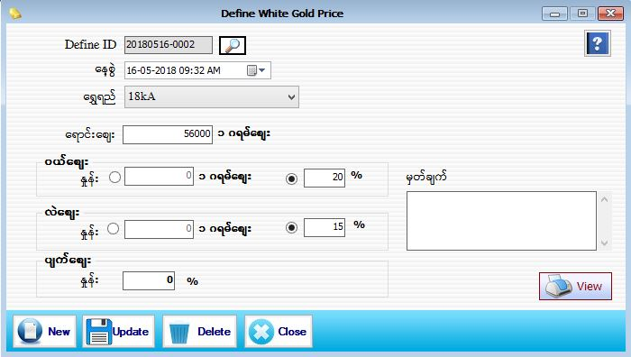

Current Price Setup

- Master Setup အောက်ရှိ Define White Gold Price Form ကိုဖွင့်ပါ။
- ရွှေဖြူ (White Gold) ပေါက်ဈေး သတ်မှတ်နိုင်သော Form ဖြစ်ပါသည်။
- Define ID အား Serial အလိုက် Auto တပ်ပေးပါမည်။ Define ID -2018 သည် လက်ရှိရောက်နေသော Year ဖြစ်ပါသည်။ 05 သည်လက်ရှိရောက်နေသော Month ဖြစ်ပါသည်။ 16သည် လက်ရှိရောက်နေသော Day ဖြစ်ပါသည်။ 0001 သည် Serail အတိုင်း S/W မှ Auto တက်ပေးပါမည်။
- နေ့စွဲတွင် လက်ရှိရောက်နေသော Date နှင့် အချိန်ကို ဖော်ပြပေးထားပါသည်။
- ရွှေဖြူ ရောင်းဈေးကိုသတ်မှတ်ပါ။ ဝယ်ဈေး နှင့် လဲဈေး တွင် ပါရှိသော နှုန်း သည် ၁ဂရမ်ဈေး ဖြစ်ပြီး ၊ (%) သည် လက်ရှိပေါက်ဈေးပေါ်မူတည်ပြီး လျော့မည့် ရာခိုင်နှုန်းကို ရွေးချယ်သတ်မှတ်နိုင်ပါသည်။ ပျက်ဈေးတွင်လဲ လက်ရှိပေါက်ဈေးပေါ်မူတည်ပြီး လျော့မည့် ရာခိုင်နှုန်းကို သတ်မှတ်ပါ။ မှတ်ချက်တွင် လိုအပ်သည်များကို ဖြည့်စွက်နိုင်ပါသည်။
- ထိုသတ်မှတ်လိုက်သော ဝယ်ဈေး(%)၊လဲဈေး(%)၊ပျက်ဈေး(%)တို့သည် Purchase Stock တွင် ပြန်ဝယ် ၊ ပြန်လဲ ပြုလုပ်ပါက Auto ကျပေးမည်ဖြစ်သည်။
- Data များ ဖြည့်စွက်ပြီးပါက Save Button နှိပ်၍ သိမ်းဆည်းနိုင်ပါသည်။
- သတ်မှတ်ခဲ့သောရွှေဈေးနှုန်းများကိုပြန်လည်ကြည့်ရှုလိုပါက View Button ကိုနှိပ်၍ ပြန်လည်ကြည့်ရှု နိုင်ပါသည်။
- သိမ်းဆည်းပြီးသား Data များအား ပြန်လည်ကြည့်ခြင်း၊ ပြင်ဆင်ခြင်းများပြုလုပ်ချင်ပါက Define ID ၏ ဘေးတွင်ရှိသော မှန်ဘီလူး button ကိုနှိပ်ပြီးပြန်လည်ကြည့်ရှုပြင်ဆင်ချင်သော Current Date အား ရွေးချယ် ပြီးပြင်နိုင် ပါသည်။
- သိမ်းဆည်းပြီးသား ထည့်ပြီးသား Data များကို ဖျက်လိုလျှင် မှန်ဘီလူး button အားနှိပ်ပြီးရှာပါ။ ထို့နောက် မိမိဖျက်လိုသော Data ကို Delete Button ကိုနှိပ်၍ ဖျက်နိုင်ပါသည်။
- White Gold Price အသစ်ထည့်လိုပါက New Button ကိုနှိပ်ပြီး အသစ်ထည့်နိုင်ပါသည်။
- Define White Gold Price Form အား အသုံးပြုပြီးပါက Close Button ကိုနှိပ်၍ ပိတ်နိုင်ပါသည်။